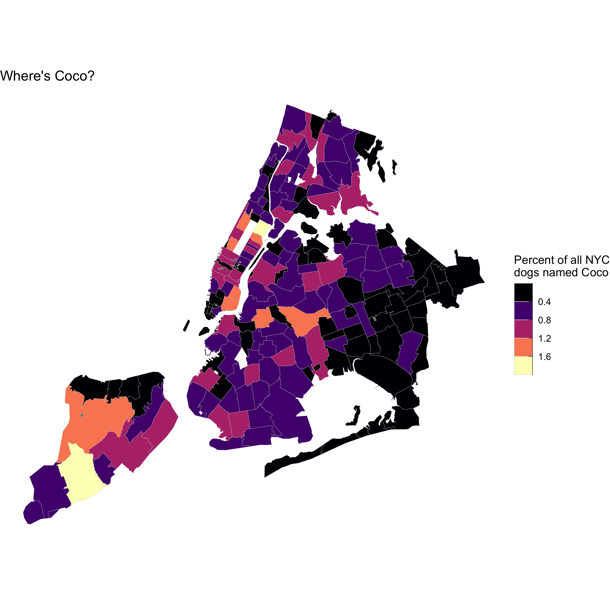

Installation
nycdogs is a data package. I use it mostly to teach. Install it from GitHub with:
# install.packages("pak")
pak::pak("kjhealy/nycdogs")Alternatively, install it from my r-universe:
install.packages(
"nycdogs",
repos = c("https://kjhealy.r-universe.dev", "https://cloud.r-project.org")
)The https://cloud.r-project.org entry lets R find the CRAN dependencies automatically.
The data
The nycdogs package contains two datasets, nyc_license and nyc_bites.
-
nyc_licensehas data on all licensed dogs in New York City, up to -
nyc_biteshas data on reported dog bites in New York City, from 2015 to 2025.
Each table has a breed_rc column of recoded breed names. The two columns use the same codes, so you can compare breeds between the tables.
The package depends on nycmaps. R attaches nycmaps automatically. nycmaps supplies the zip code table and the zip code map that the examples use.
Loading the data
The package works best with the tidyverse. Use simple features to draw maps.
library(tidyverse)
#> ── Attaching core tidyverse packages ──────────────────────── tidyverse 2.0.0 ──
#> ✔ dplyr 1.2.1 ✔ readr 2.2.0
#> ✔ forcats 1.0.1 ✔ stringr 1.6.0
#> ✔ ggplot2 4.0.3 ✔ tibble 3.3.1
#> ✔ lubridate 1.9.5 ✔ tidyr 1.3.2
#> ✔ purrr 1.2.2
#> ── Conflicts ────────────────────────────────────────── tidyverse_conflicts() ──
#> ✖ dplyr::filter() masks stats::filter()
#> ✖ dplyr::lag() masks stats::lag()
#> ℹ Use the conflicted package (<http://conflicted.r-lib.org/>) to force all conflicts to become errors
library(sf)
#> Linking to GEOS 3.13.0, GDAL 3.8.5, PROJ 9.5.1; sf_use_s2() is TRUELoad the package:
Print the tibble of license data:
nyc_license
#> # A tibble: 819,323 × 12
#> animal_name animal_gender animal_birth_year breed_name breed_rc zip_code
#> <chr> <chr> <int> <chr> <chr> <chr>
#> 1 Paige F 2014 American Pit B… Pit Bul… 10035
#> 2 Yogi M 2010 Boxer Boxer 10465
#> 3 Ali M 2014 Basenji Basenji 10013
#> 4 Queen F 2013 Akita Crossbre… Akita C… 10013
#> 5 Lola F 2009 Maltese Maltese 10028
#> 6 Ian M 2006 Unknown Unknown 10013
#> 7 Buddy M 2008 Unknown Unknown 10025
#> 8 Chewbacca F 2012 Labrador Retri… Labrado… 10013
#> 9 Heidi-bo F 2007 Dachshund Smoo… Dachshu… 11215
#> 10 Massimo M 2009 Bull Dog, Fren… French … 11201
#> # ℹ 819,313 more rows
#> # ℹ 6 more variables: zip <chr>, license_issued_date <date>,
#> # license_expired_date <date>, extract_year <int>, borough <chr>, city <chr>Licenses, dogs, and duplicate records
Users should be aware of two features of nyc_license.
First, each row is a record of one time-limited license. A row is not necessarily the record of a unique dog. A dog with a renewed license appears one time for each license period. In New York City, dog licenses can be issued for one year or five years. The table does not provide any “dog id” that ties sequences of licenses to individual dogs.
Second, the table contains several extracts of the license data. It seems like the way the provider updates the Open Data record is to periodically pull an extract from its internal database and append it to the existing public version. The extract_year column identifies the extract. A license that was active in more than one extract year appears in each of those extracts. As a result, the table has a large number of duplicate rows.
De-duplicate the records before you analyze the table. For example:
- Arrange the data by extract year.
- Find the distinct records, based on several of the identifying columns.
- Keep only one of each set of duplicates (here, the earliest).
nyc_license |>
arrange(extract_year) |>
distinct(
animal_name,
animal_gender,
animal_birth_year,
breed_name,
zip,
license_issued_date,
license_expired_date,
.keep_all = TRUE
)
#> # A tibble: 664,044 × 12
#> animal_name animal_gender animal_birth_year breed_name breed_rc zip_code
#> <chr> <chr> <int> <chr> <chr> <chr>
#> 1 Paige F 2014 American Pit B… Pit Bul… 10035
#> 2 Yogi M 2010 Boxer Boxer 10465
#> 3 Ali M 2014 Basenji Basenji 10013
#> 4 Queen F 2013 Akita Crossbre… Akita C… 10013
#> 5 Lola F 2009 Maltese Maltese 10028
#> 6 Ian M 2006 Unknown Unknown 10013
#> 7 Buddy M 2008 Unknown Unknown 10025
#> 8 Chewbacca F 2012 Labrador Retri… Labrado… 10013
#> 9 Heidi-bo F 2007 Dachshund Smoo… Dachshu… 11215
#> 10 Massimo M 2009 Bull Dog, Fren… French … 11201
#> # ℹ 664,034 more rows
#> # ℹ 6 more variables: zip <chr>, license_issued_date <date>,
#> # license_expired_date <date>, extract_year <int>, borough <chr>, city <chr>This code keeps one row for each license. To make a best-effort at counting individual dogs for the whole dataset and not licenses, remove the two license date columns from the call to distinct(). Again, the data has no dog identifier, so the count is approximate. We cannot distinguish two dogs that have the same name, sex, birth year, and breed in the same zip code. Nor can we track a dog that moves from one zip code to another between license renewals.
Dog bites and the unique_id column
The bite data has similar issues.
nyc_bites
#> # A tibble: 39,082 × 12
#> unique_id date_of_bite year species breed breed_rc age gender spay_neuter
#> <int> <date> <int> <chr> <chr> <chr> <chr> <chr> <lgl>
#> 1 4 2015-01-01 2015 Dog Ameri… Pit Bull 6 M FALSE
#> 2 14 2015-01-01 2015 Dog Ameri… Pit Bull <NA> U FALSE
#> 3 4039 2015-01-01 2015 Dog Dachs… Dachshu… 8 M FALSE
#> 4 4043 2015-01-01 2015 Dog Mixed… Mixed B… 10 M TRUE
#> 5 6393 2015-01-01 2015 Dog Dachs… Dachshu… 1 F FALSE
#> 6 6829 2015-01-01 2015 Dog Bull … Bulldog 3 F FALSE
#> 7 9350 2015-01-01 2015 Dog Pit B… Pit Bull <NA> M FALSE
#> 8 1 2015-01-02 2015 Dog Poodl… Poodle 3 M TRUE
#> 9 2 2015-01-02 2015 Dog Husky Siberia… <NA> U FALSE
#> 10 3 2015-01-02 2015 Dog <NA> <NA> <NA> U FALSE
#> # ℹ 39,072 more rows
#> # ℹ 3 more variables: borough <chr>, zip_code <chr>, zip <chr>The unique_id column does not identify a row uniquely. The source data combines several releases, and the identifier starts again from 1 in each release:
- one time for 2015 to 2017,
- one time for 2018 to 2021,
- one time for each year from 2022.
Thus, many values of unique_id appear in more than one row:
nyc_bites |>
count(unique_id) |>
filter(n > 1)
#> # A tibble: 10,280 × 2
#> unique_id n
#> <int> <int>
#> 1 1 6
#> 2 2 6
#> 3 3 6
#> 4 4 6
#> 5 5 6
#> 6 6 6
#> 7 7 6
#> 8 8 6
#> 9 9 6
#> 10 10 6
#> # ℹ 10,270 more rowsThe combination of year and unique_id is unique. No combination appears in more than one row:
nyc_bites |>
count(year, unique_id) |>
filter(n > 1)
#> # A tibble: 0 × 3
#> # ℹ 3 variables: year <int>, unique_id <int>, n <int>Use year and unique_id together to identify a bite record.
When working with nyc_license and nyc_bites data together, bear in mind that while the license table is filled out by the owner of the dog, the bites data comes from a report by the person on the receiving end of the bite. This means that information about the dog in the bites table is less reliable about, e.g., the breed, sex, and age of the dog.
Example
This example shows where dogs with a given name live. We de-duplicate the table, omitting the license dates from the identifying columns to (imperfectly) pick out individual dogs:
nyc_dogs <- nyc_license |>
arrange(extract_year) |>
distinct(
animal_name,
animal_gender,
animal_birth_year,
breed_name,
zip,
.keep_all = TRUE
)
nyc_dogs
#> # A tibble: 357,664 × 12
#> animal_name animal_gender animal_birth_year breed_name breed_rc zip_code
#> <chr> <chr> <int> <chr> <chr> <chr>
#> 1 Paige F 2014 American Pit B… Pit Bul… 10035
#> 2 Yogi M 2010 Boxer Boxer 10465
#> 3 Ali M 2014 Basenji Basenji 10013
#> 4 Queen F 2013 Akita Crossbre… Akita C… 10013
#> 5 Lola F 2009 Maltese Maltese 10028
#> 6 Ian M 2006 Unknown Unknown 10013
#> 7 Buddy M 2008 Unknown Unknown 10025
#> 8 Chewbacca F 2012 Labrador Retri… Labrado… 10013
#> 9 Heidi-bo F 2007 Dachshund Smoo… Dachshu… 11215
#> 10 Massimo M 2009 Bull Dog, Fren… French … 11201
#> # ℹ 357,654 more rows
#> # ℹ 6 more variables: zip <chr>, license_issued_date <date>,
#> # license_expired_date <date>, extract_year <int>, borough <chr>, city <chr>Then we calculate the share of dogs named Coco that live in each zip code and draw a map of the result:
boro_names <- c("Manhattan", "Queens", "Brooklyn", "Bronx", "Staten Island")
nyc_coco <- nyc_dogs |>
filter(borough %in% boro_names) |>
count(zip, animal_name) |>
complete(zip, animal_name, fill = list(n = 0)) |>
filter(animal_name == "Coco") |>
mutate(
freq = n / sum(n),
pct = round(freq * 100, 2)
)
nyc_coco
#> # A tibble: 197 × 5
#> zip animal_name n freq pct
#> <chr> <chr> <int> <dbl> <dbl>
#> 1 10001 Coco 21 0.00820 0.82
#> 2 10002 Coco 31 0.0121 1.21
#> 3 10003 Coco 12 0.00469 0.47
#> 4 10004 Coco 2 0.000781 0.08
#> 5 10005 Coco 4 0.00156 0.16
#> 6 10006 Coco 0 0 0
#> 7 10007 Coco 7 0.00273 0.27
#> 8 10009 Coco 32 0.0125 1.25
#> 9 10010 Coco 27 0.0105 1.05
#> 10 10011 Coco 28 0.0109 1.09
#> # ℹ 187 more rows
## nyc_zip_sf is from the nycmaps package. R attaches nycmaps with nycdogs.
coco_map <- left_join(nyc_zip_sf, nyc_coco, by = join_by(zip))
coco_map |>
ggplot(mapping = aes(fill = pct)) +
geom_sf(color = "gray80", linewidth = 0.1) +
scale_fill_binned(guide = guide_bins(reverse = TRUE), type = "viridis") +
labs(
title = "Where's Coco?",
fill = "Percent of all NYC\ndogs named Coco"
) +
theme_void()
Distribution of Dogs Named Coco
Hex photo: Detail from Elliott Erwitt, “New York City, 1974”.